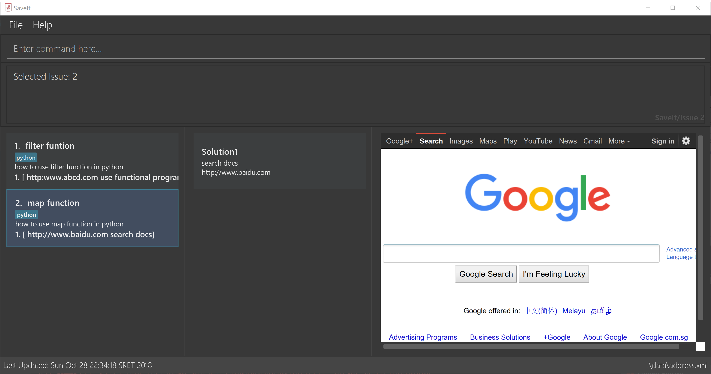

By: T12-04 Since: Sep 2018 Licence: MIT
- 1. Introduction
- 2. Quick Start
- 3. Features
- 3.1. Viewing help :
help - 3.2. Selecting an statement :
select - 3.3. Adding an issue:
add - 3.4. Editing an issue :
edit - 3.5. Deleting an statement :
delete - 3.6. Locating issues by statement:
find - 3.7. Returning to home directory :
home - 3.8. Undoing previous command :
undo - 3.9. Redoing the previously undone command:
redo - 3.10. Clearing all entries :
clear - 3.11. Listing entered commands :
history - 3.12. Exiting the program :
exit - 3.13. Listing all issues :
list[coming in v1.3] - 3.14. Refactoring tag:
refactorTag[coming in v1.3] - 3.15. Autosuggesting existing tags [coming in v1.3]
- 3.16. Highlighting command parameters [coming in v1.3]
- 3.17. Team based - Creating / Switching projects [coming in v2.0]
- 3.18. Team based - Data access from cloud [coming in v2.0]
- 3.19. Highlight the page :
highlight[coming in v2.0]
- 3.1. Viewing help :
- 4. FAQ
- 5. Command Summary
1. Introduction
Developers usually search google to find solutions to technical problems. However, bookmarking a certain web-page does not tell developers much about for which problem they searched. If developers encounter the same problem again, instead of searching through their bookmarks, it is likely for them to search on google again.
SaveIt is geared at keeping track of the issues that users find and linking it with solution web-page found on google. More importantly, SaveIt is optimized for those who prefer to work with a Command Line Interface (CLI) while still has the benefits of a Graphical User Interface (GUI). If you can type fast, SaveIt can help you search the entry saved previously faster than traditional GUI apps.
2. Quick Start
To get started with SaveIt, please follow the instructions below:
-
Ensure that Java version
9or later is installed in your Computer. -
Download the latest
saveit.jarhere. -
Copy the file to a folder as the home folder for your SaveIt.
-
Double-click the file to start the app. The GUI should appear in a few seconds, as shown below.
Figure 1. Applacation Interface -
Type the command in the command box and press Enter to execute it.
e.g. typinghelpand pressing Enter will open the help window. -
Try some example commands:
-
list: lists all issues -
addi/map_function d/How to use map function in python t/python: records a issue of map function with description "How to use map function in python" tagged as "python" -
delete3: deletes the 3rd issue shown in the current list -
exit: exits the app
-
3. Features
The following is a list of commands that you can use in the application.
Command Format
-
Words in
UPPER_CASEare the parameters to be supplied by the user e.g. inadd i/ISSUE_STATEMENT d/DESCRIPTION,ISSUE_STATEMENTandDESCRIPTIONare parameters which can be used asadd i/Segment_Fault d/java. -
Items in square brackets are optional e.g
i/ISSUE_STATEMENT d/DESCRIPTION [t/TAG]can be used asi/map_function d/how to use map in python t/pythonor asi/map_function d/how to use in python. -
Items with
… after them can be used multiple times including zero times e.g.[t/TAG]…can be used ast/python,t/python t/javaetc. -
Parameters can be in any order e.g. if the command specifies
t/TAG, d/DESCRIPTION i/ISSUE_STATEMENTis also acceptable.
3.2. Selecting an statement : select
Selects an issue identified by the index number used in the displayed issue list and change the current editing directory to the issue selected.
Format: select INDEX
|
Examples:
|
3.3. Adding an issue: add
Adds an issue to the SaveIt App.
Format: add i/ISSUE_STATEMENT d/DESCRIPTION [t/TAG]…
|
Format: add s/SOLUTION_LINK2 r/REMARK
|
Examples:
|
3.4. Editing an issue : edit
Edits an existing issue or solutions in the SaveIt App.
Format: edit INDEX [i/NEW_ISSUE] [d/NEW_DESCRIPTION] [t/TAG]…
|
Format: * edit INDEX s/NEW_SOLUTION_LINK s/NEW_SOLUTION_REMARK
|
Examples:
|
3.5. Deleting an statement : delete
Deletes the specified issue from SaveIt App.
Format: delete INDEX
|
Examples:
|
3.6. Locating issues by statement: find
Find issues whose statement and description contains any of the given search queries.
Format: find [KEYWORDS…]
|
Examples:
|
3.7. Returning to home directory : home
Changes the current editing directory to the root directory. Besides, Shows a list of all issues in the issue list by index.
Format: home
|
Examples:
|
3.8. Undoing previous command : undo
Restores the SaveIt App to the state before the previous undoable command was executed.
Format: undo
|
Examples:
|
3.9. Redoing the previously undone command: redo
Reverses the most recent undo command.
Format: redo
Examples:
3.10. Clearing all entries : clear
Clears all issues from the saveIt App.
Format: clear
Example:
|
3.11. Listing entered commands : history
Lists all the commands that you have entered in reverse chronological order.
Format: history
|
Pressing the ↑ and ↓ arrows will display the previous and next input respectively in the command box. |
3.13. Listing all issues : list [coming in v1.3]
Shows a list of all issues in the statement bookmark according to either chronological order or frequency order. Users can also choose to list part of issues.
Format: list chr
|
Format: list freq
|
Format: list tag
|
Examples:
3.14. Refactoring tag: refactorTag [coming in v1.3]
To rename or remove a spcific tag for all entries with that tag.
Format: refactorTag t/OLD_TAG [t/NEW_TAG]
|
Examples:
3.15. Autosuggesting existing tags [coming in v1.3]
To prevent the user from creating many similar tags / duplicates, whenever the user creates a record with a tag, or modifies a record’s tag, the application searches for similar tags in the system and prompts the user with a list of similar tags.
Example:
3.16. Highlighting command parameters [coming in v1.3]
To distinguish user command for different parameters, commands get highlighted with different color as you type.
Examples:
3.17. Team based - Creating / Switching projects [coming in v2.0]
Records are organized into projects, that way, each project only stores information (bugs/issues) relevant to that project.
3.18. Team based - Data access from cloud [coming in v2.0]
Developers usually work in teams, and since they are working on the same code base, it is likely that they will encounter the same issues. Developers can be added into projects (mentioned in 3.16), and have access to the same recorded issues that others have added. The data will be hosted on a cloud server so that any updates are accessible by other developers straight away.
-
Creating projects: new cs2103project
-
Viewing projects: projects
-
1. cs2103project
-
2. cs1010sproject
-
-
Switching projects: switch 1 OR switch cs2103project
3.19. Highlight the page : highlight [coming in v2.0]
Highlight the certain part of the page that shows on the window, use an annotation box.
Format: highlight
4. FAQ
Due to the immaturity of our product, There may be some minor problems when you use SaveIt in unintended situations. Here are questions that may arise during your usage.
Q: How do I transfer my data to another Computer?
A: Install the app in the other computer and overwrite the empty data file it creates with the file that contains the data of your previous SaveIt folder.
Q: Can I use the app without Internet Connection?
A: For our current version of SaveIt, you will need to store all the web-page locally if there is not the Internet connection.
Otherwise, the web-page will not be displayed correctly.
5. Command Summary
Here is a summary of all command formats for your reference. Please note that some commands may implement more than one format.
-
Help :
help -
Select :
select INDEX
e.g.select 2 -
Add
For issues:add i/[ISSUE_STATEMENT] d/[DESCRIPTION] t/[Tag]
e.g.add i/Bug d/exception thrown not handled t/java
For solutions:add s/[SOLUTION_LINK] r/[REMARK]
e.g.add s/www.github.com r/A git website -
Edit
For issues:edit INDEX i/[ISSUE_STATEMENT] d/[DESCRIPTION]
e.g.edit 2 i/exception thrown not handled d/statement solved
For solutions:edit INDEX s/[SOLUTION_LINK] r/[REMARK]
e.g.edit 3 s/www.google.com r/add a catch block -
Delete :
delete INDEX
e.g.delete 3 -
Search :
search KEYWORD [MORE_KEYWORDS]
e.g.Search BST -
Home :
home -
Clear :
clear -
Undo :
undo -
Redo :
redo -
History :
history -
Exit :
exit -
List :
list -
Refactor Tag :
refactor [OLDTAG] [NEWTAG]
e.g.refactorTag java C++ -
Highlight :
highlight